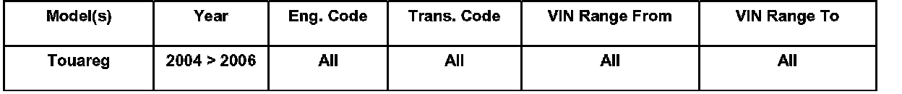
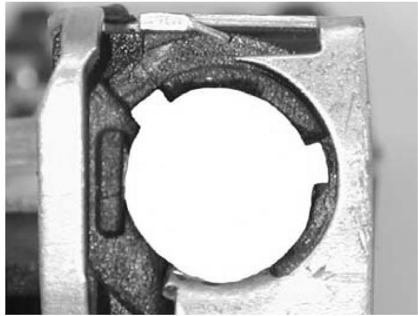
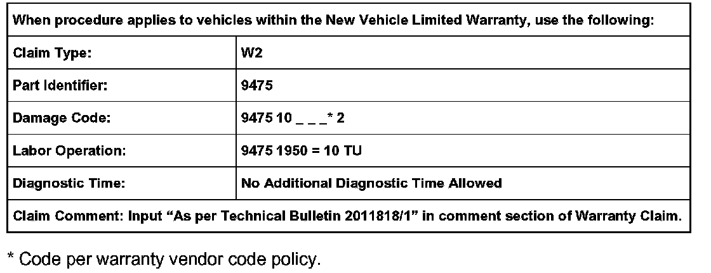
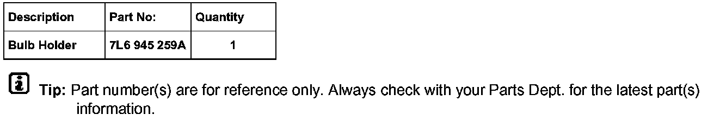

Lighting - Back Up Lamp Inop./Bulb Out Message Displayed
ConditionCustomer States "Bulb Out Icon Displayed On MFI"
Back-Up-M16- and -M17-Lamp Inoperative causing Multi-Function Indicator (MFI) to display "Bulb Out" icon.
94 06 05 5/4/2006, 2011818/1

Applicable Vehicles
Technical Background
The back up (reverse) bulb contact tab, within bulb holder socket, may have too much tension. As a result, bulb may be pushed out of the bulb holder socket, causing lamp(s) to be inoperative.
Production Solution
New Bulb Holder socket design (2 notches).
Service
^ Switch OFF ignition and remove ignition key.
^ Access affected bulb holder. See Repair Manual for removal procedure. Disconnect wiring harness connector from bulb holder.

^ Earlier production bulb holder sockets may only contain 1 notch. Verify current bulb holder socket contains 2 notches, as shown.
If the current bulb holder socket DOES NOT have 2 notches:
^ Replace bulb holder. See Required Parts and Tools. See Repair Manual for replacement procedure.
^ DO NOT replace rear light housing.
If the current bulb holder socket has 2 notches:
^ Using a 6 mm diameter dowel, push down twice on the bulb contact tab. This will relieve tension against bulb.
^ Reinstall bulb into adjusted socket.
Tip:
Ensure bulb is fully inserted into locking notches of bulb holder socket.

Warranty

Required Parts and Tools